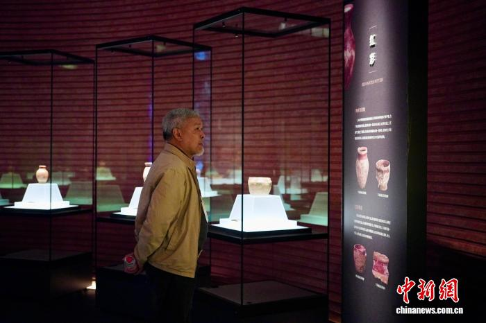

小小新闻播报
看图片，说短句，分享新发现
11月24日 · 今日新闻
三条新新闻，三个不同方向。短句慢慢讲，每条留一点时间请同学回答，合计约5—8分钟。
周二风较大、早晚凉，出门穿暖和些。
1. 彩绘大飞机出发啦
航空·彩绘首航 · 看图、讲述与互动
2. 四位姐姐一起滑出冠军
体育·接力合作 · 看图、讲述与互动

3. 新博物馆里看古老陶器
文化·博物馆开放 · 看图、讲述与互动
三条新新闻，三个不同方向。短句慢慢讲，每条留一点时间请同学回答，合计约5—8分钟。
周二风较大、早晚凉，出门穿暖和些。
航空·彩绘首航 · 看图、讲述与互动
体育·接力合作 · 看图、讲述与互动

文化·博物馆开放 · 看图、讲述与互动